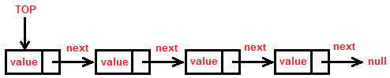
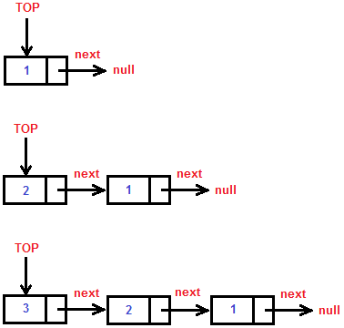
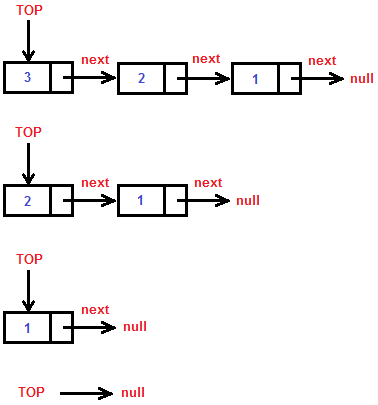
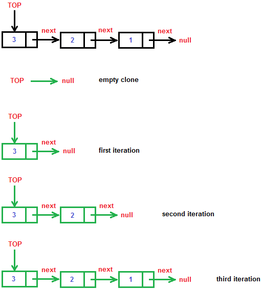

Dynamic Stack Implementation - C#
A dynamic stack is a stack that is implemented not with an array but with nodes. A node consists of two things (a value and a link to another node).
The next image illustrates the stack.

You can find the full source here.
Lets see how the Node is implemented.
private class Node
{
public T Item { get; set; }
public Node Next { get; set; }
public Node(T item)
{
this.Item = item;
this.Next = null;
}
public Node(T item, Node next)
{
this.Item = item;
this.Next = next;
}
}In my implementation the value is called Item and the link to the next node is a Node reference called Next. We also have two constructors. One that creates a node with a given item and a link that points to null, and one that creates a node with a given item and a link that points to a node different than null.
What do we have?
private Node top;
private int count;
public CustomStack()
{
this.top = null;
this.count = 0;
}
public int Count
{
get
{
return this.count;
}
}We have a node that points to the top of the stack. The count is optional but it's always better to know how many items we have in a stack. We have only a simple default constructor that initializes our stack. The top is null and the count is zero when the stack is created. We also have a property for the count with getter only.
Not lets see how the basic methods are implemented.
public void Push(T item)
{
if (this.top == null)
{
// We have empty stack
this.top = new Node(item);
}
else
{
Node newNode = new Node(item, this.top);
this.top = newNode;
}
this.count++;
}The “Push” method adds a new node to the stack. If the stack is empty, then we create a new node that points to null. This new node is the only element in the stack (the stack top). If the stack is not empty however, a new node is created. This node has to be the top of the stack so we point it's link to the stack top. Then the top node starts to point the new node (the new node becomes the top of the stack).
Lets see it with our eyes.
Consider the following code:
CustomStack<int> stack = new CustomStack<int>();
stack.Push(1);
stack.Push(2);
stack.Push(3);In the memory it should look something like this:

public T Peek()
{
if (this.count == 0)
{
// We have empty stack
throw new InvalidOperationException("The stack is empty");
}
return this.top.Item;
}The “Peek” method gets the value of the top without removing the top from the stack. If the stack is empty however, an InvalidOperationException is thrown.
public T Pop()
{
if (this.count == 0)
{
// We have empty stack
throw new InvalidOperationException("The stack is empty");
}
T result = this.top.Item;
this.top = this.top.Next;
this.count--;
return result;
}The “Pop” is almost the same as “Peek”. The difference is that it not only gets the value of the top but it also removes the top from the stack. The value is taken and the top is assigned to it's link (next node). The count is decremented. Finally the value is returned.
Consider the following code:
CustomStack<int> stack = new CustomStack<int>();
stack.Push(1);
stack.Push(2);
stack.Push(3);
stack.Pop();
stack.Pop();
stack.Pop();The popping process looks like this:

public void Clear()
{
this.top = null;
this.count = 0;
}“Clear” clears the stack. It's just like the constructor. We initialize the top with null and the count with 0.
public object Clone()
{
CustomStack clone = new CustomStack();
if (this.count != 0)
{
// We have non-empty stack
clone.top = new Node(this.top.Item);
Node currentNode = this.top.Next;
Node cloneLastNode = clone.top;
while (currentNode != null)
{
Node newNode = new Node(currentNode.Item);
cloneLastNode.Next = newNode;
cloneLastNode = newNode;
currentNode = currentNode.Next;
}
cloneLastNode.Next = null;
clone.count = this.count;
}
return clone;
}This is maybe the most complex method of all. If the stack is empty the job is easy. We just make an empty stack and returned it. If it is not, then we have to make the actual copy. This method makes a deep copy. That means that the two stacks don't depend on each other. They are equal, but not the same (don't share the same reference). How do we do that? First we make the clone a copy of the top. The “currentNode” is a helper node that will walk through the original stack from the top to the end. The “cloneLastNode” is the last node of the clone stack at any state of the copying progress. At first the “cloneLastNode” is the top of the clone stack. While “currentNode” is not null (we haven't reached the original stack's end) we make a new node exactly the same as the current node we've reached. Then the last node of the clone stack is linked to the new node and then is assigned to it. That way in the next iteration this can be repeated. The “currentNode” is also assigned to it's link. Last we link the last node of the clone stack to null and copy the count of the original stack. I can say it like that: “while we haven't reached the end of the stack, create a new node with value equal to the value of the current node we've reached, link the last node of the clone stack with the new node and make the last node of the clone to be the new node, then go to the next node of the original stack. Last the link of the last node of the clone stack is initialized with null”.
You just have to think it through and try to write it in a paper.
It's very hard to be explained, maybe a picture will help:

The next methods are not basic for Stack implementation but are helpful sometimes. You can consider them as extensions.
public override string ToString()
{
StringBuilder result = new StringBuilder();
Node currentNode = this.top;
while (currentNode != null)
{
result.Append(currentNode.Item.ToString());
currentNode = currentNode.Next;
}
return result.ToString();
}I've overrided the ToString method. It's very simple. The stack is walked through from the top to the end and the values of the nodes are appended to a StringBuilder.
public T[] ToArray()
{
T[] result = new T[this.count];
Node currentNode = this.top;
for (int i = 0; i < this.count; i++)
{
result[i] = currentNode.Item;
currentNode = currentNode.Next;
}
return result;
}Exactly the same as ToString. The difference is that the values of the nodes are put into an array.
public IEnumerator GetEnumerator()
{
Node currentNode = this.top;
while (currentNode != null)
{
T result = currentNode.Item;
currentNode = currentNode.Next;
yield return result;
}
}
IEnumerator IEnumerable.GetEnumerator()
{
return this.GetEnumerator();
}This one is hard to be explained. My stack implements IEnumerable<T>. That way it can be walked through with a foreach loop. If you want to learn about it you can find a lot of information in MSDN or other resources. Maybe I will make a different post to explain how to implement this interface the hard way and the easy way.